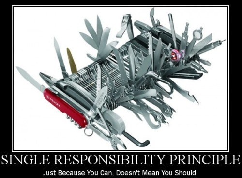

Principios SOLID
- Joaquín Ormaechea -
- Fizzmod 2018 -
Qué son los principios SOLID?
SOLID son las iniciales de 5 principios de diseño de OOP
La idea principal es conseguir software fácil de entender, refactorizar, extender y mantener.
Los 5 principios SOLID son:
- Single Responsability Principle (SRP)
- Open/Closed Principle (OCP)
- Liskov Substitution Principle (LSP)
- Interface Segregation Principle (ISP)
- Dependency Inversion Principle (ISP)
Single Responsability Principle (SRP)
Una clase debe tener una y solo una responsabilidad y por lo tanto solo un motivo para cambiar

Sí, esa es una foto de Order.php
[Demo SRP]
Open/Closed Principle (OCP)
Una clase debe ser abierta para la extensión, pero cerrada para su modificación.
La idea básica es que una clase debe poder ser extendida, pero sin necesitar modificar la clase misma.
Esto viene muy ligado a interfaces, y cómo una clase debe estar preparada para interactuar con todo aquel que implemente esa interfaz, y no con un conjunto limitado de clases.
De este principio depende la extensibilidad de un sistema.
[Demo OCP]
Liskov Substitution Principle (LSP)
Una clase que hereda de otra debe ser intercambiable por la clase padre
Liskov Substitution Principle (LSP)
Una clase que hereda de otra debe ser intercambiable por la clase padre
Algo muy importante que dice este principio (aunque no lo diga de manera muy clara), es que al extender una clase todos los métodos que se sobreescriben deben ser compatibles tanto en los tipos de datos que reciben como en los tipos de datos que devuelven.
IMPORTANTE: Esto asegura que al intercambiar, todo funcione a nivel sistema, no a nivel lógica de negocio. Las clases no deben tener la misma lógica, sino la misma interfaz (entrada y salida)
[Demo LSP]
Interface Segregation Principle (ISP)
Una clase no debe ser obligada a implementar una interfaz que no utilice.
Este principio básicamente hace que uno se asegure de no implementar métodos que no hagan nada, solo para cumplir con una interfaz.
En caso de tener una interfaz que obligue a quienes la implementan, a declarar métodos que no tienen sentido, es una clara señal de que la interfaz debe ser separada en más interfaces pequeñas.
[Demo ISP]
Dependency Inversion Principle (DIP)
Una clase debe no debe depender de una implementación, sino de una abstracción.
Este principio incentiva a no depender, por ejemplo, de un motor de base de datos, sino de una interfaz de interacción con el motor que se implemente en un momento dado.
Si bien un sistema (alto nivel) depende de una DB, no puede depender de una implementación de MySQL (bajo nivel), sino que debe depender, por ejemplo, de un conector de bases de datos (alto nivel).
[Demo DIP]
Preguntas?

Gracias
- Joaquín Ormaechea -
- Fizzmod 2018 -